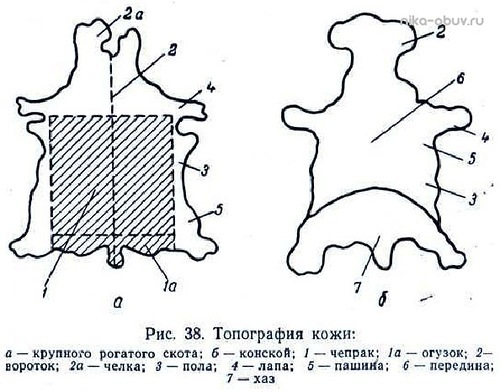
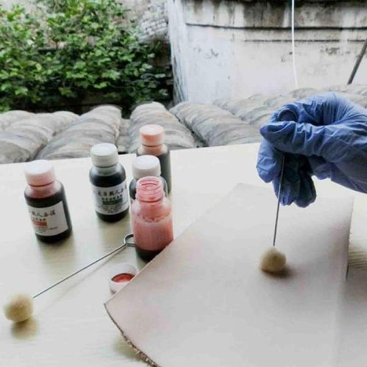

С чего начинать?
Ту вроде просто, с кожи и инструментов (лично я учился на старой куртке, которую было жалко выкидывать, потом перешел на нормальную кожу). Если нет старой куртки / сапог, посмотрите сначала в сторону полы, она дешевле и не жалко запороть.
После того как набьете руку (про инструменты будет ниже), можно смотреть в сторону другой части - чепрак. Кстати кожа бывает растительного дубления (растишка) и хромового. Обычно кожи продаются готовыми кусками (и вроде как можно найти и нарезанные куски А4 формата по 800 рублей). Цена обычно за дм2 (от 15 до 60 рублей) в итоге шкура (100 дм2) будет стоит порядка 2-6 тысяч рублей. При этом пола с пороками (30-50 дм2) будет стоит порядка 400 рублей.
Какую кожу покупать когда уже набили руку?
Я рекомендую брать кожу двух видов толщиной 1мм и 2-3мм растительного дубления (1мм для внутренних дел, кармашки там и внутренние держатели в обложку для паспорта и прочие элементы).
Цвет кожи?
Берите некрашеную кожу и отдельно краски (про краски - ниже) так вы не будете привязаны к определенному цвету и согласитесь отдать 6 тысяч за кожу одного цвета - довольно странно (ну только если речь не стоит о какой-нибудь нить сумке - портфеле, которые сразу отобьют инвестиции).
Краски?
так, кожа у вас есть, но теперь вопрос красок, есть как минимум двух видов, проникающие (проникают внутрь кожи) и поверхностные (как пленка на поверхности),
Проникающие есть трех видов, на водной основе, на спиртовой и на растворителях, я предпочитаю на водной основе (тут даже морилка для дерева подойдет за 30 рублей бутылка).
Поверхностные - тут в общем куча всего, я пока крашу красками тараго после покраски прохожусь финишем на основе карнаубского воска, кажется тоже тараго,
После любой проникающей краски, кожа становится жесткой, а иногда слишком жесткой, поэтому не переусердствуйте.
Где купить краски для кожи?
морилки в любом строительном (я взял липу - желтый цвет, эбен - голубой, красное дерево - красный и мокко - коричневый). Поверхностные и финиш я беру в катарино (тут список не замыкается, в общем пробуйте разные краски)
Как красить?
морилку раньше красил кисточкой, теперь крашу мелким валиком. вроде есть тампоны какие-то специальные (на фото) по 20 р за штуку, пока ими не красил, как только из поднебесной прилетят попробую. Поверхностные краски наношу тампонированием.